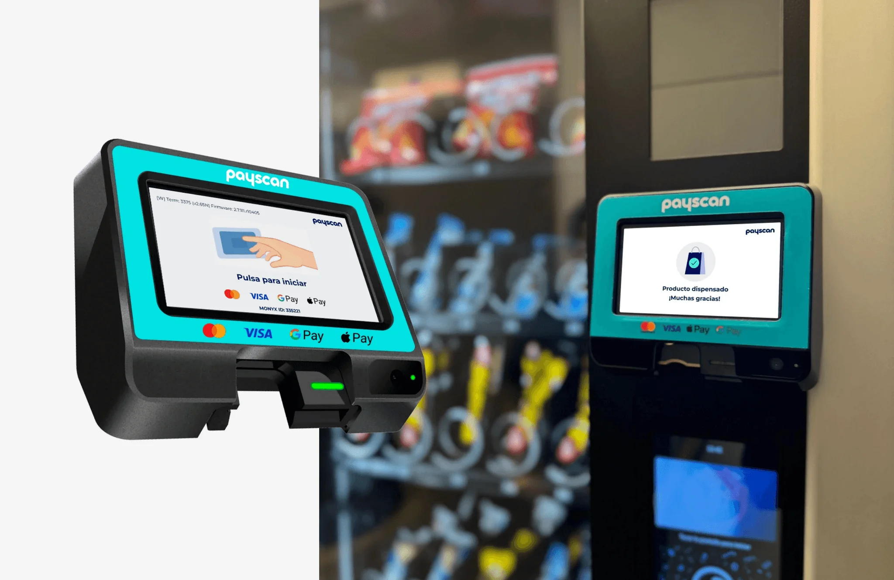
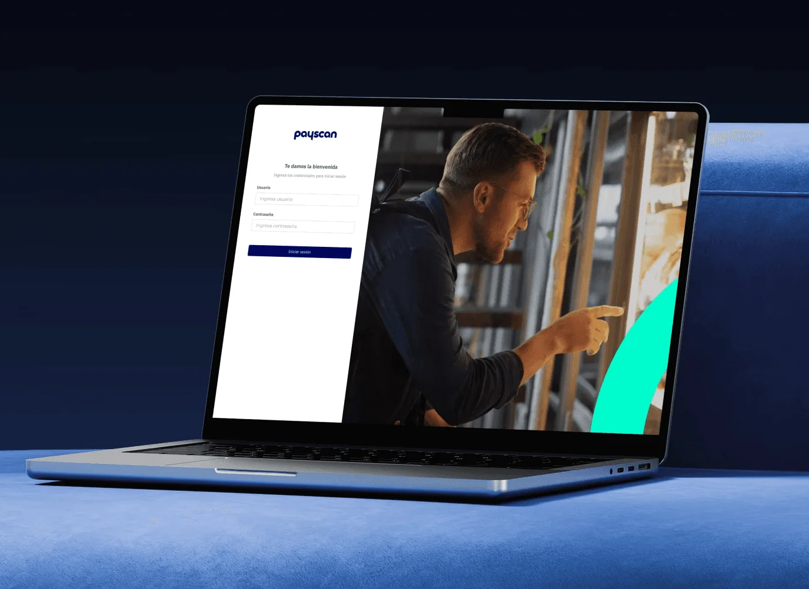
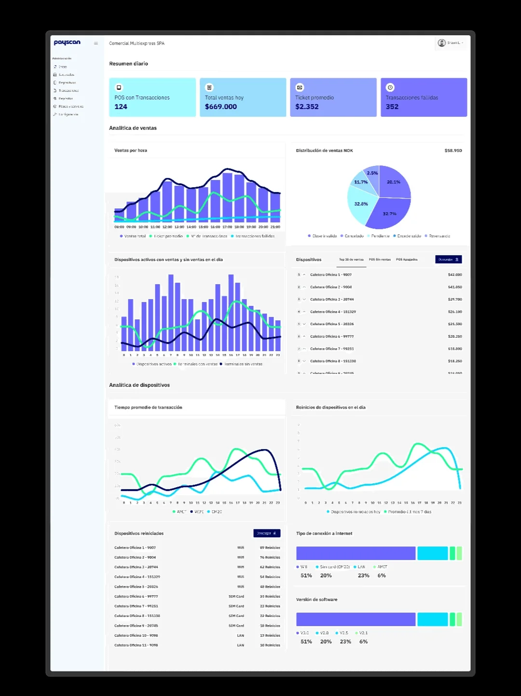
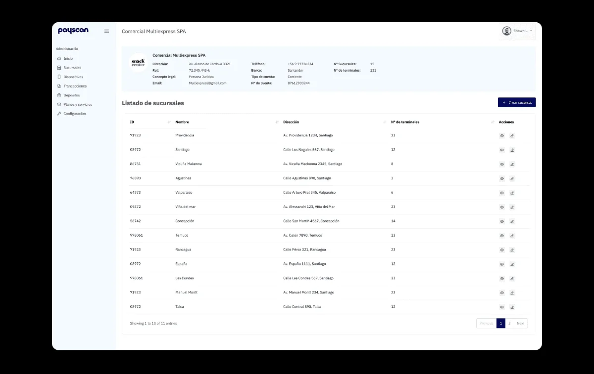
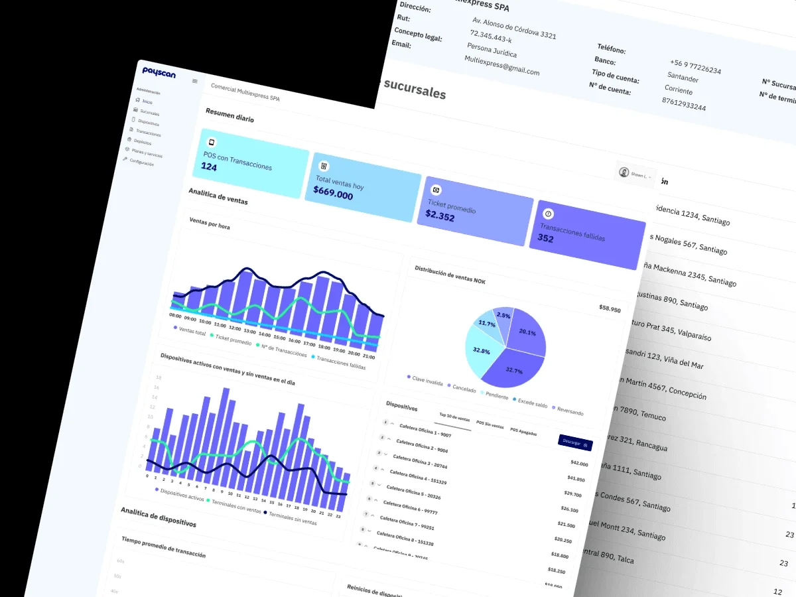

Payscan
Payscan is a payment solutions company. Its product is a POS that connects to all kinds of machines: snack and drink vending machines, coffee machines, single-product machines, massage chairs and parking meters. The brief was to design the whole system: the device used by the person paying and the back office merchants use to manage their network.

The problem
The same device has to work just as well attached to a coffee machine in an office as to a parking meter on the street. What changes isn't the payment, it's everything else: the person paying is standing, in a hurry, sometimes out in the open and with nobody to ask.
The existing app put too many options on every screen. In a product used for thirty seconds, standing up, every extra option is a decision someone has to make in front of a machine, and a moment of doubt there is a sale that doesn't happen.
There was a second, less visible half. Payscan doesn't sell a device, it sells a network: merchants with several branches, and each branch with several POS devices. Without a way to manage that, every new setup and every query goes through Payscan, and the business can no longer grow without growing its headcount too.
What I did
- Product design
- Interaction design
- Information architecture
- Roles and permissions
- UI design
Tools
- Figma
- Maze
- Photoshop
- Jitter
Context
At HF Solutions, the consultancy in charge of Payscan's product.

What I did
On the POS every decision went in the same direction: remove. I cut the options per screen down to the ones that are truly needed, increased the type size so it reads standing up and at arm's length, rewrote the messages in plain language and left an obvious way out of every flow. Nobody should get stuck on a payment screen without knowing how to go back.
Because the same device connects to very different machines, I designed the payment flow so it doesn't depend on the type of machine. Someone who has paid for a coffee knows how to pay a parking meter. That consistency isn't an aesthetic preference: it's what makes what a user learns carry across the whole network.
I organized the back office around the real hierarchy of the business: merchant, branch and device. A large merchant can have dozens of branches, each with several POS devices, so each level shows its own performance and lets you drill down to the next. From there you set up merchants, branches and devices, and see sales at each level, the comparison with the previous month and device status in real time.
The piece that holds everything else up is the profile builder. I defined three roles with different needs: the super admin manages the entire platform, the merchant profile manages its own side and can create secondary profiles, and the cashier profile is view-only, with no editing permissions. Letting a merchant create its own profiles is what allows it to operate without asking Payscan for permission every time.


The outcome
Payscan ended up with an end-to-end system: the POS used by the person paying and the back office that manages the entire network, working the same on any type of machine.
What moves the business most isn't a specific screen, it's autonomy. With the access hierarchy and the profile builder, a merchant sets up a new branch, connects its devices and hands out permissions to its people without calling anyone. Payscan stops operating each account and instead maintains the platform where its clients run themselves. That's what makes it possible to add merchants without adding staff at the same rate.
It's the project where I worked furthest in both directions at once: the detail of a screen someone uses for thirty seconds standing on the street, and the permission structure that decides who can do what across an entire network. They're two different crafts, and the system only works if both are done well.
